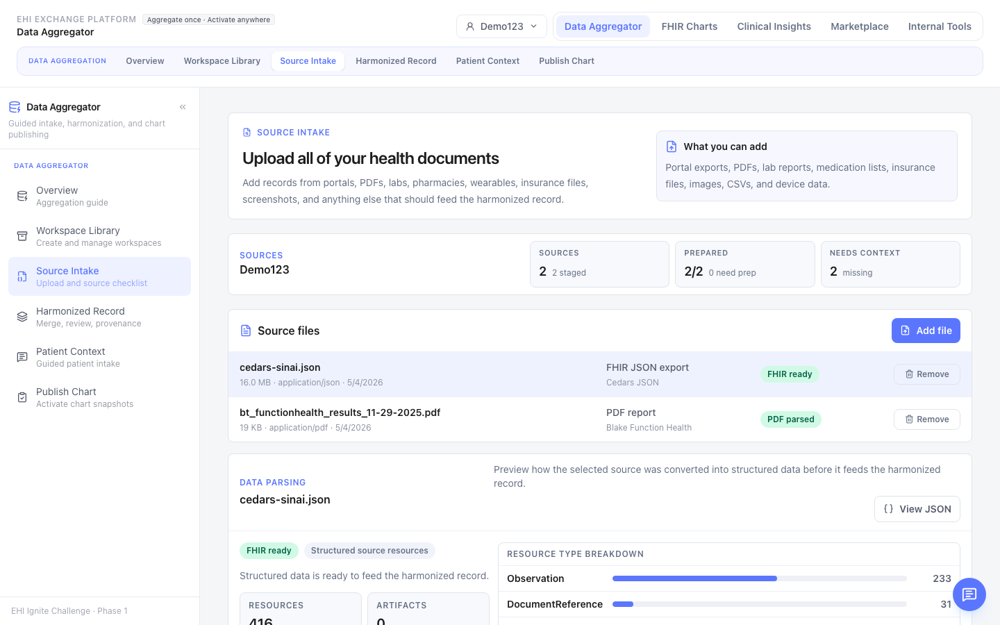
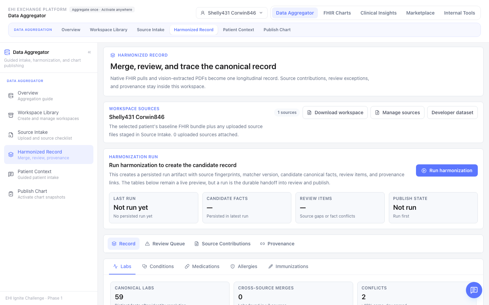
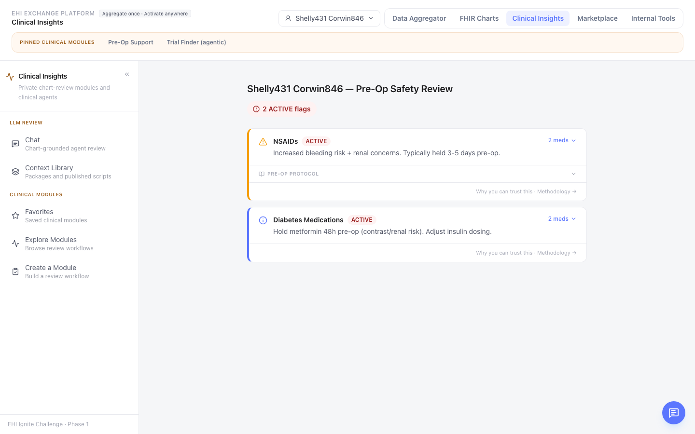
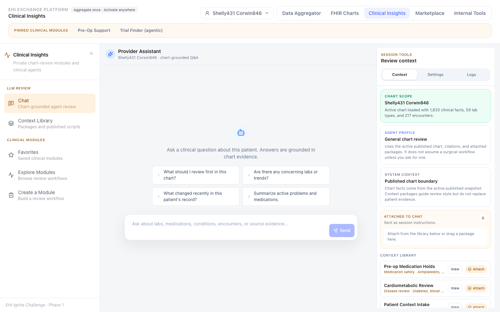

What has shipped: Working prototype across 1,180 synthetic patients (Synthea R4) · PDF → FHIR pipeline benchmarked across 5 extraction architectures · cited assistant answers over harmonized records, today.
Records are increasingly available — through patient portals, exchange networks, and direct downloads. Availability is not understanding. Atlas focuses on the next layer: organizing, harmonizing, explaining, and sharing what already exists.
Patients increasingly have a right to receive their health information, but the practical output is often a folder of files: FHIR bundles, C-CDAs, PDFs, portal exports, scanned reports, and lab documents. The data is available, but not usable.
EHI Atlas prepares each source, maps facts into FHIR-compatible resources, preserves provenance, harmonizes across sources, then exposes the result through summaries, charts, Q&A, and portable handoffs.
ReadableUsableActionableStandards-alignedProvenance-backed
Current exports are often technically compliant but cognitively inaccessible. They move data, but they do not answer user questions. A patient, caregiver, or receiving clinician must still reconcile duplicated facts, interpret codes, sort administrative noise from clinical signal, and determine whether the record is complete enough to act.
Records arrive across portals, labs, specialists, payers, PDFs, C-CDAs, and FHIR bundles.
Most artifacts preserve the source document but do not create a reusable computational record.
AI summaries are unsafe if they cannot cite the source facts and disclose missing information.
| Scenario | How EHI Atlas addresses it |
|---|---|
| Integration Across Settings | Ingests FHIR bundles, C-CDA/CDA, PDFs, lab reports, and portal exports into one FHIR-compatible fact graph with source provenance. |
| Customization for Clinical Domains | Supports domain-specific evidence packets for pre-op review, medication reconciliation, second opinions, caregiver handoffs, and future specialties. |
| Interactive Patient Tools | Provides cited Q&A over the patient’s own harmonized record, with missing-information flags instead of unsupported answers. |
Atlas prioritizes actionability: summaries and charts first, evidence drilldown second, raw artifacts always available. This keeps the user out of database browsing while preserving auditability.
FHIR is not the user interface and it is not the final product. A FHIR-compatible structure is the common evidence layer that makes fragmented records consistent, auditable, easier to interpret, and portable across tools.
| Direct document AI | EHI Atlas pattern |
|---|---|
| LLM rereads raw files on each request. | System retrieves typed, validated facts for the question. |
| Prompt behavior depends on document layout and context window. | Agent tools operate over stable clinical concepts. |
| Citations are difficult and often approximate. | Each fact retains source document, page/location, method, and provenance. |
| Hard to reuse across sources. | New inputs become adapters into the same clinical substrate. |
get_recent_labs(loinc, window) · get_active_medications(rxnorm_class) · get_condition_history(problem) · compare_sources(fact_id) · get_source_provenance(fact_id) · build_patient_summary(audience, purpose)The model becomes transportable because it reasons through tools over standardized facts, not custom prompts tied to one PDF or C-CDA layout.




Source-specific at the edge, standards-aligned at the core. FHIR, C-CDA, CDA, and PDFs remain important inputs. The durable product layer is the harmonized, provenance-backed clinical fact graph.
Tested across 1,180 synthetic patients (Synthea R4 corpus), surfacing safety panel, interactions, timeline, and care-journey views over 527K resources.
Reviewer-facing environment explaining FHIR resource types, data definitions, coverage, pipeline stages, and trust/interpretability gates. This makes the methodology inspectable, not hidden.
The assistant builds query-filtered clinical context from safety flags, medication classes, ranked conditions, allergies, encounters, and other facts instead of injecting raw bundles into the model.
PDF-to-FHIR pipeline with document-context pass, focused per-resource extraction passes, FHIR Bundle output, source locators, and evaluation against gold-standard outputs where available.
Recent work added a Gemma 4 31B via Ollama pipeline for bounded labs/vitals extraction. This is intentionally benchmarked as a candidate path rather than assumed to be sufficient for all clinical extraction. The architecture is model-flexible: frontier models can handle complex narrative extraction while local or specialized models can be tested for repetitive tabular tasks.
| Area | Current evidence | Phase 2 next step |
|---|---|---|
| FHIR corpus | Synthetic R4 patient corpus and clinical/data lab surfaces. | Expand multi-source evaluation and reviewer workflows. |
| PDF extraction | Pluggable pipelines emit FHIR Bundle outputs. | Benchmark precision/recall/cost/latency by resource type. |
| Local models | Gemma 4 31B via Ollama installed and smoke-tested for tabular extraction (labs, vitals, immunizations). | Compare against cloud gold outputs and improve cropping/OCR prompts. |
The product should make the record usable before AI enters the loop. When the assistant is used, it receives a bounded evidence packet assembled from validated clinical facts. This keeps responses faster, more explainable, and less likely to drift.
Question: “Is this patient safe for surgery this week?”
Evidence packet: 15 facts · safety flags, active medications, recent encounters, missing labs · source citations attached
Answer: Not yet cleared. Address medication holds and obtain missing baseline labs. See source records for each claim.
Question: "What changed since my last visit?"
Evidence packet: encounters, condition deltas, new medications, lab trends · 12 facts · source citations attached
Answer: Three changes since 2025-12-04 — two new diagnoses (sleep apnea, vitamin D deficiency), Lipitor 20mg added, HbA1c improved from 7.8 → 6.9. Flu vaccine is overdue. See encounter records for each change.
Atlas should not trap the patient's record inside one web application. The same evidence workspace can support command-line review, deterministic charting, markdown/JSON/FHIR exports, local models, frontier models such as Claude, and future clinical agent systems. This portability is part of patient ownership: the patient can carry usable evidence across tools rather than starting over with each new application.
Atlas separates source-specific ingestion from standards-aligned reasoning. Each input format gets an adapter, and every adapter targets the same FHIR-compatible clinical fact graph.
| Layer | Function | Scalability logic |
|---|---|---|
| Ingest | Archive and classify raw files. | Add new source types without changing downstream views. |
| Extract/adapt | Convert FHIR, C-CDA, PDFs, and reports into candidate facts. | Pipeline registry supports multiple extraction strategies. |
| Harmonize | Deduplicate, validate, code, and connect facts to provenance. | Deterministic logic can be tested across corpora and source mixes. |
| Reason | LLM tools retrieve evidence packets for summaries, Q&A, and charts. | Same tools work across sources once facts are normalized. |
The Phase 1 prototype uses synthetic Synthea data wherever possible and keeps private/PHI-like test artifacts out of source control. The architecture is designed for HIPAA-aware deployment patterns with the following controls built into the design:
The LLM receives focused evidence packets, not unrestricted raw artifact access.
Facts retain source trails to avoid orphaned clinical claims.
Patients grant and revoke chart-snapshot access at the evidence-packet level, not the full archive.
FHIR R4US Core where applicableSMART App Launch-ready future pathC-CDA/CDA as source inputsProvenance-centered design
Understand the record, ask better questions, see trends, identify gaps, and bring a coherent summary to new care settings.
Phase 2 target: reduce specialist-visit prep from 2+ hours of record review to 5 minutes of summary review.
Review high-signal summaries with source references, spot conflicts, and generate handoffs without trusting a black-box summary.
Phase 2 target: surface five clinically-relevant facts in 30 seconds vs the current 5–10 minutes spent reading prior-records sections.
Convert EHI movement into EHI usability through a standards-aligned evidence layer that can power multiple applications.
Phase 2 target: ingest from at least 5 source types (FHIR, C-CDA, PDF, lab portal, payer claims) with consistent provenance across all inputs.
Blake Thomson brings healthcare data strategy and business development experience from Cedars-Sinai, where his work focuses on claims data, referral ecosystems, provider networks, and translating complex healthcare data into operational strategy. This submission combines healthcare domain understanding with hands-on prototyping in FHIR data modeling, agentic workflows, PDF extraction, clinical context engineering, local model evaluation, and patient-facing health information design.
Prototype design was informed by a neurosurgeon's pre-operative chart review as the primary clinical scenario — where a specialist must synthesize multi-source records in under 30 seconds. This shaped the safety panel, medication hold logic, and evidence-packet design. Phase 2 will recruit a clinical advisory panel including primary-care physicians, surgeons, patient advocates, and health-IT experts to validate the evidence structure against real workflows.